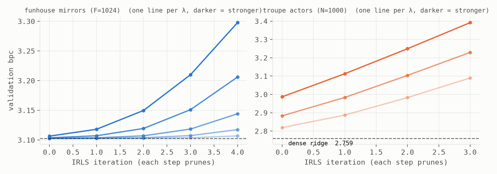
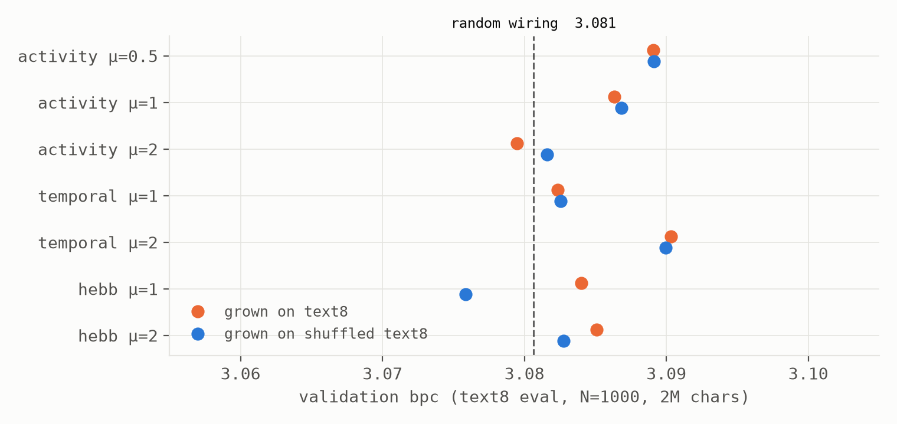
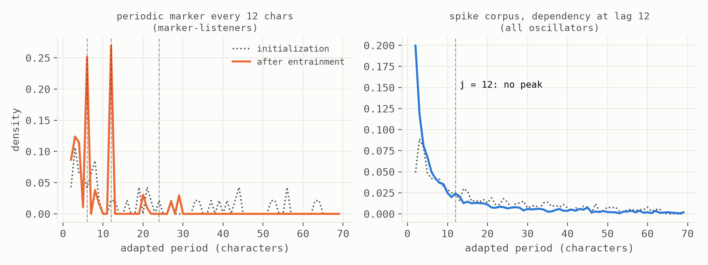

cd ~/experiments/mold && less note.txt
What the Mold Couldn't Learn (and What That Teaches)
Three Physarum machines meet a language model: a solver that found nothing sparse, a growth rule that couldn't hear, and an oscillator that told us our text has no clock
Abstract. Slime molds solve mazes, plan rail networks, and anticipate periodic events. We built three machines from that biology and set them on character-level language modeling, with every prediction pre-registered: a readout GROWN by Physarum flow dynamics (provably an ℓ1 / basis-pursuit solver); a reservoir whose wiring thickens with use (Tero's tube-reinforcement law, three definitions of "traffic"); and a bank of adaptive-frequency oscillators that entrain to rhythms in the stream (Saigusa's anticipating amoeba). All three work as machines. All three returned negatives, each with its mechanism in hand. (1) The flow-reader passes its solver gate to 5×10⁻¹⁰, then finds nothing to select: on random-mirror features and on a thousand-actor automata ensemble alike, every pruning step strictly worsens prediction — every representation this program has grown is a fully distributed code. (2) The growth rule reshapes wiring vigorously but cannot tell Wikipedia from shuffled Wikipedia under ANY traffic definition — volume and unsigned rhythm are order-blind by construction, and even confirmed-prediction traffic left performance inside a ±0.01-bpc band around random wiring: at fixed topology and spectral radius, edge magnitudes are a nearly dead lever. (3) The oscillator bank locks to a genuine periodic marker with ~90% of its reachable oscillators — and finds no rhythm whatsoever in Markov streams whose dependency sits at a fixed lag: entrainment reads clocks, not correlations, and our corpora contain none. Three machines, three mechanistic negatives, zero unexplained results — and a map of which biological levers do not reach language, and why.
§1 The reader that found nothing to select
Straszak & Vishnoi proved that Physarum's tube dynamics are iteratively reweighted least squares converging to the basis-pursuit solution — the slime mold is an ℓ1 solver. So we replaced the program's ridge readout with flow: conductances on feature–symbol tubes, reweighted least squares on the same Gram matrices, early stopping on validation. The solver gate passed emphatically (5-sparse recovery from an underdetermined system, max error 5×10⁻¹⁰, exact support). A sparse reader is a categorically different animal from ridge or logistic: it can refuse crowded features instead of averaging them, and the readout-relative-edge law predicts each reader class prices interference its own way.
Then it met the program's representations, and the answer was uniform (Fig. 1): on the funhouse's random mirrors and on the tiny-actors ensemble's mood features alike, every IRLS iteration at every ℓ1 pressure strictly worsens validation bpc; the best point is always iteration zero, dense; the full thousand actors stay in the cast ("how many actors does Wikipedia need?" — all of them). Both registered sparsity predictions were falsified by their named alternative: these codes are fully distributed. Random projections smear structure across every mirror by construction; and the automata ensemble — whose crowning trick is crowding-free memory — turns out to achieve it not by concentrating information in specialist actors but by keeping its superposition discrete. Crowding-free does not imply concentrated. The flow-reader stands as a validated instrument whose measured finding is an absence: no privileged features, anywhere we looked.

§2 The loom that couldn't hear
Tero's law grew Tokyo's rail map in a dish: tubes that carry flow thicken, the rest wither, with a response exponent μ that tunes lean-vs-redundant networks. We let it grow a reservoir's wiring — drive the network with text, no readout, reinforce by traffic, renormalize (homeostasis), freeze, then evaluate. The load-bearing control: grow one loom on text8 and a twin on character-shuffled text8. If growth learns language, the real corpus must beat the gibberish.
It never did (Fig. 2) — and the three-way ladder of traffic definitions says why with increasing precision. Volume (window-averaged activity) is order-blind: shuffled text has identical unigram statistics, so every tube feels identical flow. Unsigned rhythm (|pre|·|post| across a step) rectifies away the correlational content and collapses back to volume. Kept promises (signed pre·post correlation aligned with each edge's sign — an edge is fed when its prediction comes true) is order-sensitive by construction, sharpened wiring hardest — and was corpus-blind anyway. Meanwhile the μ dial behaved exactly as the biology says (wiring entropy monotone in μ; winner-take-all at μ=2), so the rule works; it just doesn't reshape wiring toward language. With three traffic statistics acquitted, two suspects remain, registered for the sequel: the homeostasis rescale may launder differential structure out — or, the wider reading the whole grid supports, edge magnitudes at fixed topology and spectral radius are simply a near-dead lever for a linear-readout language model (all fifteen cells sit in a 0.014-bpc band around random). If that holds, growth must rewire topology, not thickness — a different mold.

§3 The bank that reads clocks
Saigusa's chilled Physarum slows down before the next cold shock arrives — a brainless blob anticipating WHEN, plausibly by oscillator entrainment. Our version: a bank of adaptive-frequency oscillators (Righetti–Buchli–Ijspeert dynamics), each tracking one symbol's rhythm, natural periods log-spaced over 2–64 characters. Both gates passed after two honest fixes recorded in the journal (a frequency floor — a minimum metabolic rate — and single-symbol routing, since a mixed diet of aperiodic kicks drowns any rhythm): a lone oscillator locks a detuned start to a kick train exactly (16 → 10.00), and on a corpus carrying a deterministic marker every 12 characters, essentially every oscillator whose lock basin could reach the rhythm found it (Fig. 3, left).
Then the registered discovery test: corpora from the law experiment, where the next character depends on the character exactly j back. Autocorrelation at lag 12, prize of 1.3 bits sitting right there — and the bank finds nothing (Fig. 3, right): no peak at j for any j, histograms indistinguishable from the no-structure control. The spec's own pre-registered caveat is the mechanism: a lag-j Markov dependency is statistical fondness, not punctuality; a Righetti oscillator entrains to kicks that arrive on time, and the aperiodic majority of arrivals randomizes the adaptation. Entrainment reads clocks, not correlations. The pond keeps its place as an instrument — and its first scientific statement is about the data: neither spike corpora nor, by every indication, English prose is periodic in the way a phase-based memory needs. One imagined route to future-keyed state geometry — the trained transformer's corner in the companion notes — is hereby closed: you cannot clockwork your way to the future when the text keeps no time.

§4 What that teaches, limits, and related work
Three negatives, one map. The flow-reader teaches that this program's representations — random and self-organized alike — hold language as fully distributed codes, so selection-based readers have no purchase and interference-tolerance profiles, not sparsity, are where reader classes differ. The loom teaches that "use it or lose it" needs a use-signal that survives averaging, rectification, AND homeostasis before it can hear word order — and that thickness itself may never have been load-bearing. The bank teaches that anticipation-by-entrainment requires punctuality that symbol streams do not possess. None of these was knowable from the armchair; each is one afternoon's compute; and each was registered before it ran, with the falsifications doing the teaching.
Limits: one corpus family (text8 + the spike sources), N = 1000 reservoirs and banks, single seeds, one machine; the loom's dead-lever reading is a hypothesis with a registered discriminating experiment, not a verdict; the flow-reader's budgets and λ grids are stated in the journal and its conclusions are, as everywhere in this program, budget-relative.
Related work. The maze and the rail map: Nakagaki et al.; Tero et al. Provable Physarum computation: Bonifaci, Mehlhorn & Varma; the IRLS/basis-pursuit equivalence the reader runs on: Straszak & Vishnoi. Anticipation in Physarum: Saigusa et al.; adaptive-frequency oscillators: Righetti, Buchli & Ijspeert. Self-organizing reservoirs (SORN): Lazar et al. — the loom's nearest neighbor, whose plasticity acts on thresholds and topology rather than magnitudes alone; in light of §2, that difference may be the whole story. Lasso readouts for reservoirs exist scattered in the ESN literature; the contribution here is the program — three biological mechanisms run under one pre-registered protocol against one scoreboard, with the machinery of the four companion notes.